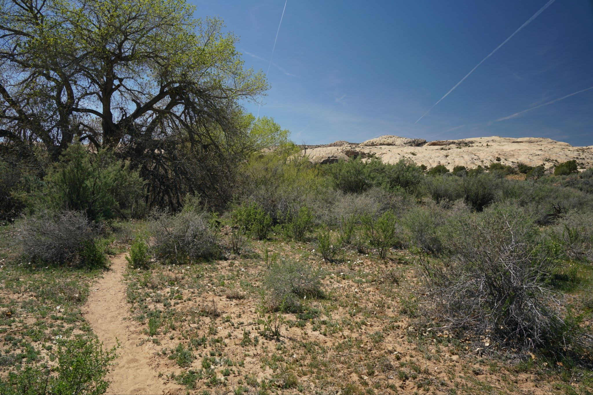
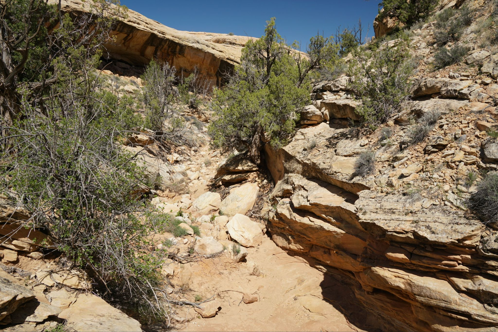
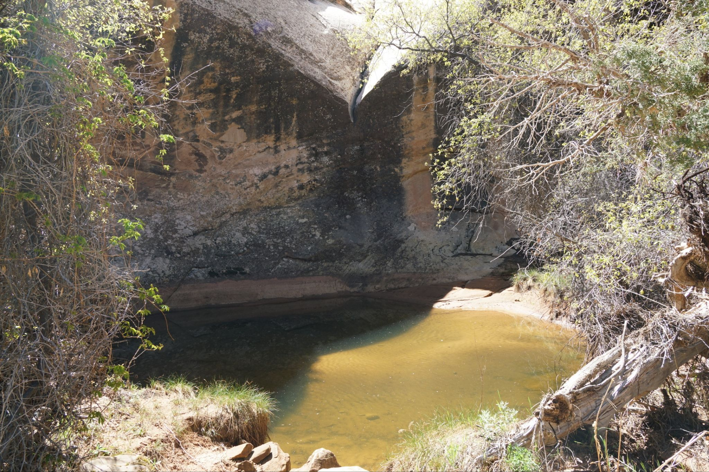
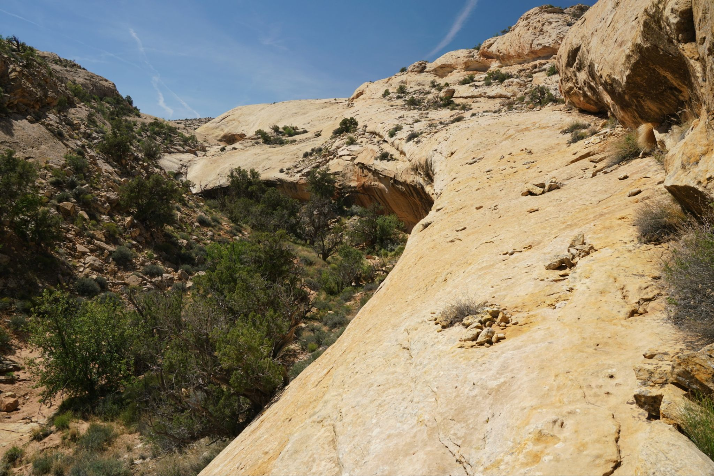
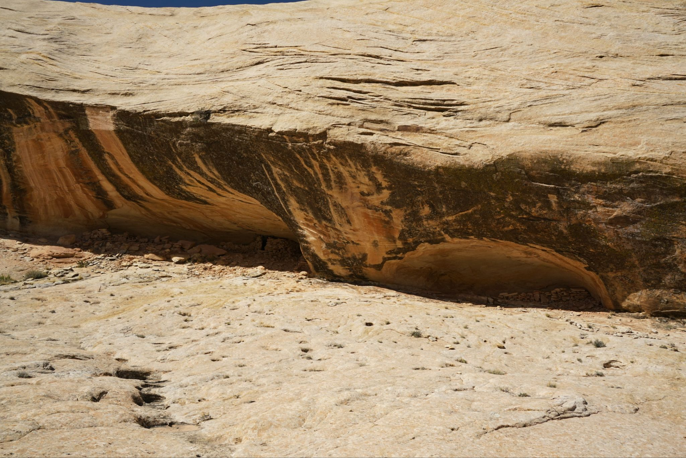
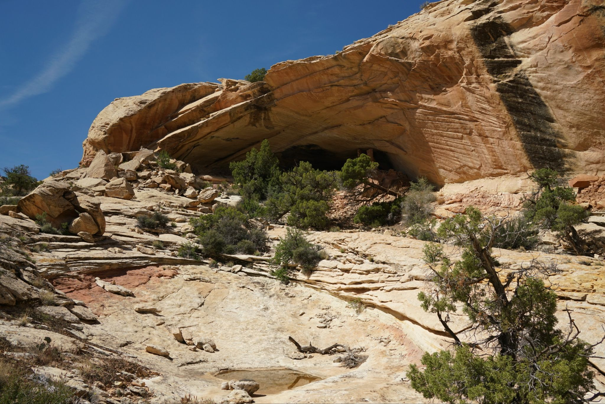
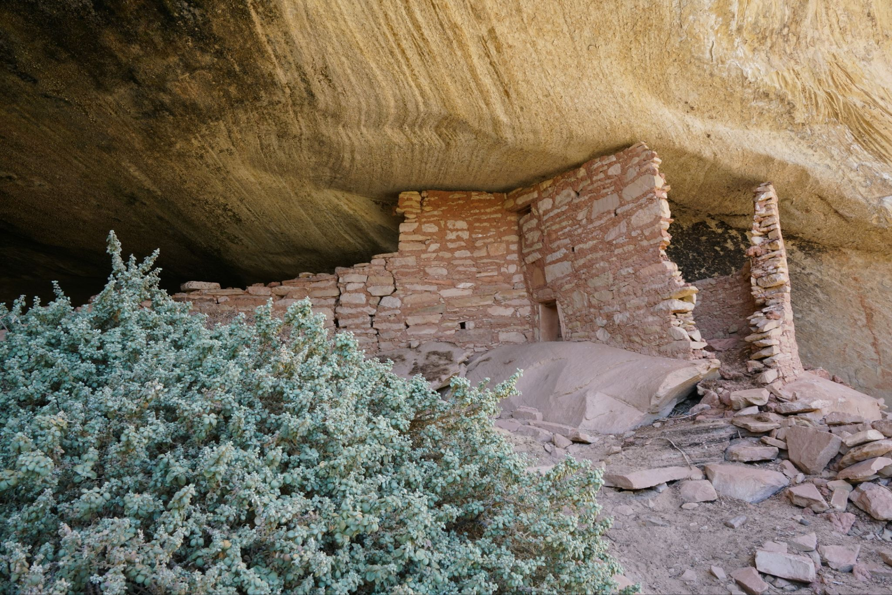
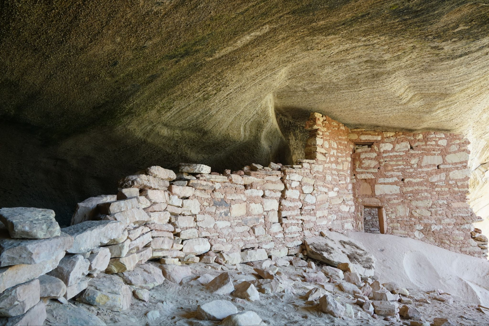
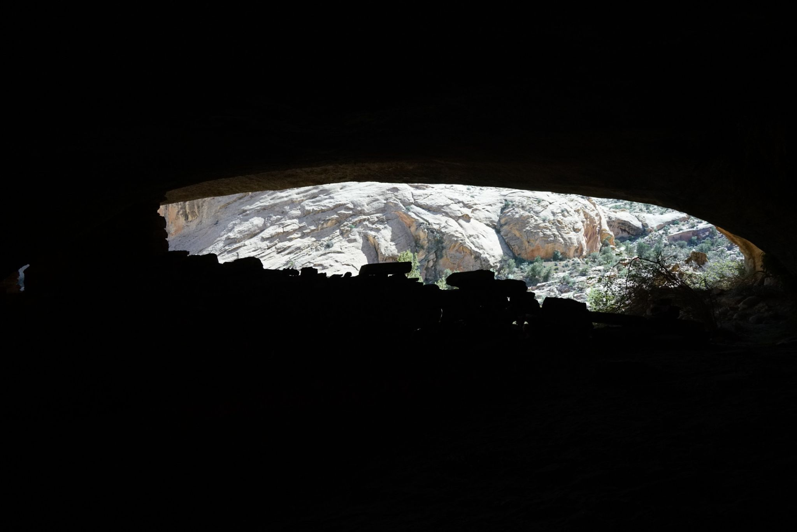

4/5/2026 - Cathedral Ruin
This is another nice ruins in the comb ridge area. The hike, like others nearby, is short and goes through a wash with sand and rocks. There is an unpassable pour off no more than a quarter of a mile before the ruins but it can be bypassed by climbing a ledge on the west side and walking south. The ruins itself are pretty cool. They are in an alcove which goes back away into the rock, and next to the ruins on the ceiling is dripping water coming through the rock.








